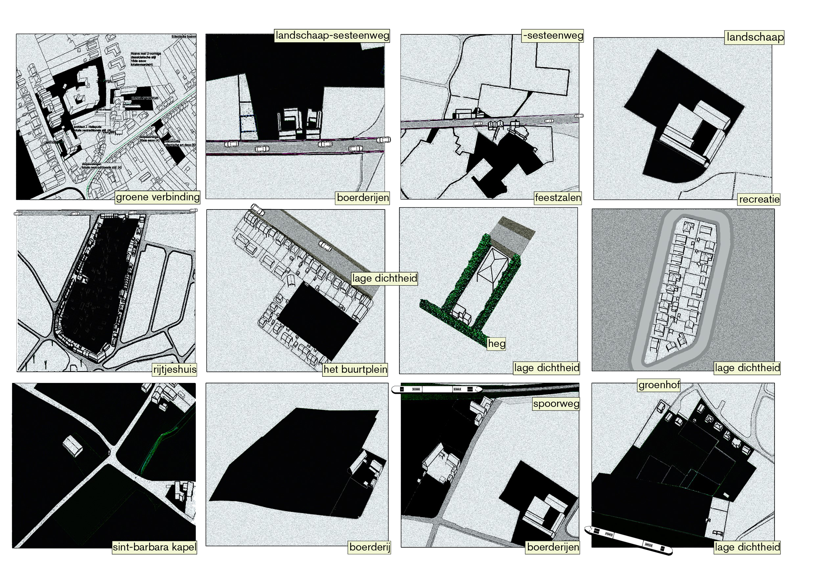
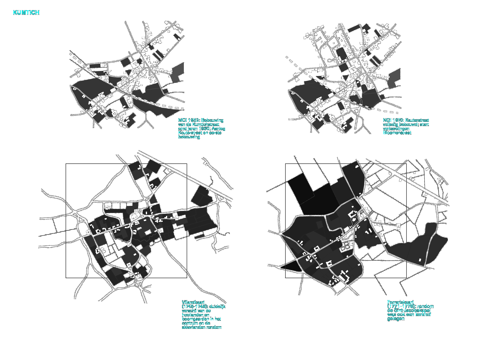
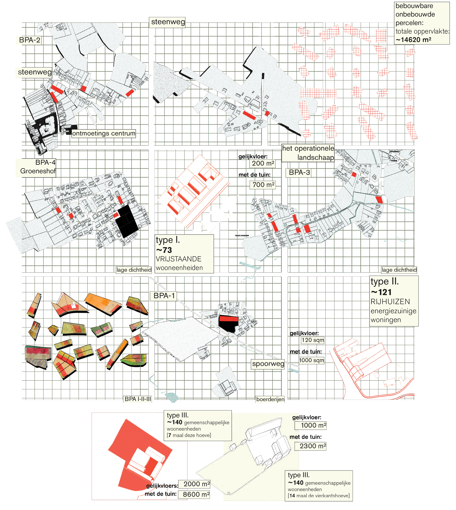
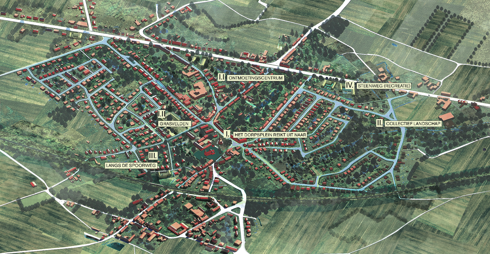

rapprochement to kumtich
going back to the villages - tienen - masterplan for kumtich
team
with TV Studio Tuin en Wereld + Latitude+ Kaderstudio

Vision
The new master plan seeks a symbiosis between operational landscapes and "third space," aiming to foster a resilient and inclusive community. Operational landscapes encompass the functional elements of the landscape—such as agricultural areas, waterways, and green spaces—that are crucial to the region's sustainable development. These landscapes serve as vital infrastructure for promoting biodiversity and providing living space for both people and nature. "Third space" focuses on creating an inclusive, community-oriented environment where people and other non-human actors come together and collaborate to care for the community and the landscape it inhabits.
analysis



implementation
Integrated Implementation The Kumtich Masterplan is a co-designed blueprint rather than a rigid document, relying on a dynamic interplay between proactive public policy, private initiatives, and tailored regulatory instruments to transform long-term spatial vision into realistic, phased actions.

Prioritizing Existing Density
Future residential development must prioritize the careful evaluation and densification of existing built environments through communal living models before converting open, greenfield land.
Policy-Based Capacity Calculations
The prospective spatial capacity is calculated exclusively using designated buildable lots from historical spatial implementation plans (BPAs), explicitly omitting active construction projects from the base evaluation.
Infill-First Strategy
By concentrating growth strictly within established boundaries through targeted infill strategies, the masterplan ensures sustainable land management while optimizing shared residential space.
process
A Four-Stage Co-Design Process Execution relies on a structured 35-week, four-phase methodology—Understand, Inspire, Design, and Handover—that combines spatial research, scenario modeling, and financial viability checks to establish a clear narrative and action plan for the village's future.

participation
Multi-Scale Participatory Engagement Central to the masterplan is the concept of "Toenadering" (reconciliation/approach), which drives active co-design among local citizens, public institutions, and private stakeholders to align development proposals with regional landscape networks and community-driven needs.